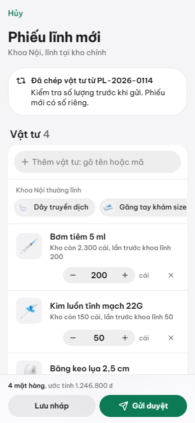

Ở màn Hôm nay, bấm Lập phiếu. Trên điện thoại có thể bấm nút tròn + ở đáy màn hình.
Phiếu tự ghi tên khoa của bạn, lĩnh tại kho chính. Ứng dụng gợi ý sẵn các vật tư khoa hay lĩnh, kèm ảnh. Bấm vào ảnh để thêm.
Muốn thêm vật tư khác, gõ tên hoặc mã vào ô “Thêm vật tư: gõ tên hoặc mã” rồi chọn trong danh sách. Mỗi dòng cho biết kho còn bao nhiêu.
Chỉnh số lượng bằng nút − / + hoặc gõ số. Ứng dụng đặt sẵn số lượng lần trước khoa đã lĩnh.
Ghi lý do lĩnh hoặc y lệnh vào ô Ghi chú nếu có (hóa chất nên ghi y lệnh).
Kiểm tra lại rồi bấm Gửi duyệt. Phiếu được đánh số riêng (ví dụ PL-2026-0131) và chuyển cho trưởng khoa.
Nếu số lượng bạn xin lớn hơn số kho đang có, con số chuyển màu cam. Bạn vẫn gửi được, nhưng kho có thể trả phiếu về để bạn giảm số lượng.
Chưa xong? Bấm Lưu nháp. Phiếu nháp nằm trong mục Cần xử lý cho đến khi bạn gửi. Mở lại phiếu nháp để Sửa, Xóa hoặc Gửi duyệt.
